操作系统还原真相 1-3
操作系统学习记录
1. 导论
硬件输入输出
分为两类，串行和并行，所以，我们相应的接口就是串行接口和并行接口。串行接口跟CPU通信，反过来，CPU通过串行接口跟串行设备进行数据传输。并行接口工作原理如法炮制。
访问外部硬件的方式有两种：
- 把外设的内存映射到一定的地址内存中去，比如说显卡
- 通过IO接口访问
啥是应用程序
我们把应用软件和操作系统解构，本质上就是一串命令和数据。我们使用编译器来讲代码翻译成机器语言。加上操作系统的一些现成的配合。程序才可以很快的运行。
用户态和内核态
内核态（Kernel Mode）：运行操作系统程序，操作硬件
用户态（User Mode）：运行用户程序
一般而言，用户态需要陷入到内核态发生在下面三种情形：
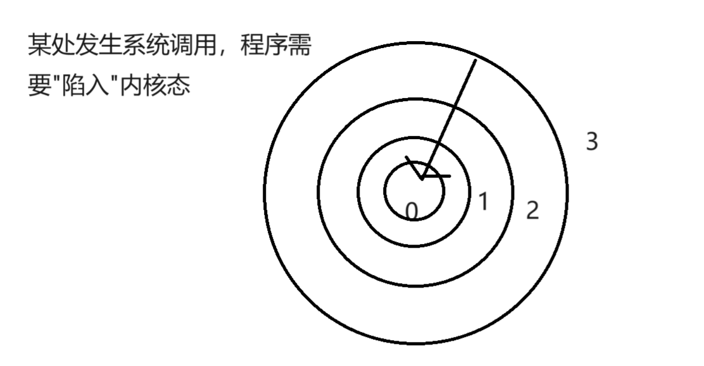
- 请求系统调用
这是用户态进程主动要求切换到内核态的一种方式，用户态进程通过系统调用申请使用操作系统提供的服务程序完成工作。比如前例中fork()实际上就是执行了一个创建新进程的系统调用。系统调用的机制其核心还是使用了操作系统为用户特别开放的一个中断来实现，例如Linux的int 80h中断。
用户程序通常调用库函数，由库函数再调用系统调用，因此有的库函数会使用户程序进入内核态（只要库函数中某处调用了系统调用），有的则不会。
- 异常
当CPU在执行运行在用户态下的程序时，发生了某些事先不可知的异常，这时会触发由当前运行进程切换到处理此异常的内核相关程序中，也就转到了内核态，比如缺页异常。
- 外围设备的中断
当外围设备完成用户请求的操作后，会向CPU发出相应的中断信号，这时CPU会暂停执行下一条即将要执行的指令转而去执行与中断信号对应的处理程序，如果先前执行的指令是用户态下的程序，那么这个转换的过程自然也就发生了由用户态到内核态的切换。比如硬盘读写操作完成，系统会切换到硬盘读写的中断处理程序中执行后续操作等。
值得注意的是：这3种方式是系统在运行时由用户态转到内核态的最主要方式，其中系统调用可以认为是用户进程主动发起的，异常和外围设备中断则是被动的。
为何给内存分段
事实上，内存是随机读写设备，我们只需要给出一个地址告诉地址总线就好了。内存分段是一个历史遗留问题。我们发现，最开始要是直接给出绝对物理地址，会导致程序之间还需要判断这个地址上是否有其他程序运行，很是麻烦。不如我们加上一层抽象，即：采用分段，让程序使用虚拟地址，CPU在处理的时候，采用“段基址+段内地址偏移”的计算方式。这样，每一个程序好像都在独立的采用从0开始的编号地址，但实际映射的时候，分发到的是不同的绝对物理地址。这样程序就不需要关系底层的事情了。
上述的行为我们叫重定位。重定位行为需要专门的段基址寄存器存储段基址的值，如cs, ds, es等。这下，只要修改段基址就可以让程序在内存海洋里自由的翱翔了
CPU将外部存储器划分成一个个64k的逻辑段，通过这种方式加上段内地址偏移即可通过16位寄存器实现1MB地址空间的寻址。举个例子：
- 用户输入一个操作指令，该指令通过总线传递到CPU内部，cpu通过段寄存器（cs）找到相应的逻辑段，接着根据段内指针找到相应的存储单元，将存储单元中的指令通过程序计数器读入指令寄存器，然后执行后续操作。
- 对于堆栈操作：cpu通过段寄存器（ss）找到相应的逻辑段，然后根据堆栈指针（sp）找到相应的存储单元，接着执行命令的后续流程。
当然了最后的运行结果要经过地址产生与总线控制逻辑运算得到一个20位地址（简单的讲就是将段基址左移４位，这样就可以表示20位了），然后交给相应的接口电路，继而交给程序进行数据的处理。
代码分段
事实上，代码不分段，也是可以跑的。毕竟CPU不晓得命令和数据的区别，告诉他执行什么机器码他就会执行什么机器码。分段只是方便我们的代码书写和代码调试。
值得注意的是：CPU要求指令是逻辑连续的，不需要物理连续。也就是说，只要源源不断的告诉他指令是什么。当然，实际上，指令还是连续的，当指令送到CPU哪里的时候，指令已经被紧密的排列好（操作码）只需要“当前指令地址 + 当前指令长度 = 下一个指令的地址”，就可以一直正确的执行下去了
分段的好处有三点：
- 第一，可以为它们赋予不同的属性。
例如数据本身是需要修改的，所以数据就需要有可写的属性，不让数据段可写，那程序根本就无法执行啦。程序中的代码是不能被更改的，这样就要求代码段具备只读的属性
- 第二，为了提高CPU内部缓存的命中率。
缓存起作用的原因是程序的局部性原理。在CPU内部也有缓存机制，将程序中的指令和数据分离，这有利于增强程序的局部性。CPU内部有针对数据和针对指令的两种缓存机制，因此，将数据和代码分开存储将使程序运行得更快。
- 第三，节省内存。
程序中存在一些只读的部分，比如代码，当一个程序的多个副本同时运行时（比如同时执行多个ls命令时），没必要在内存中同时存在多个相同的代码段，这将浪费有限的物理内存资源，只要把这一个代码段共享就可以了。
那么问题来了：如何给那一堆东西添加属性呢？是谁做了这个事情？答案是CPU和操作系统配合着干：
在保护模式下，有这样一个数据结构，它叫全局描述符表（Global Descriptor Table，GDT），这个表中的每一项称为段描述符。
那什么是描述符？描述符就是描述某种数据的数据结构，是元信息，属于数据的数据。就像人们的身份证，上面有写性别、出生日期、地址等描述个人情况的信息。在段描述符中有段的属性位其实是有2个，一个是S字段，占1bit大小，另外一个是占4bit大小的TYPE字段，这两个字段配合在一起使用就能组合出各种属性，如只读、向下扩展、只执行等。
这个表是操作系统填，操作系统在让CPU进入保护模式之前，首先要准备好GDT，也就是要设置好GDT的相关项，填写好段描述符。段描述符填写成什么样，段具备什么样的属性，这完全取决于操作系统了，在这里大家只要知道，段描述符中的S字段和TYPE字段负责该段的属性，也就是该属性与安全相关。
（1）编译器负责挑选出数据具备的属性，从而根据属性将程序片段分类，比如，划分出了只读属性的代码段和可写属性的数据段。再补充一下，编译器并没有让段具备某种属性，对于代码段，编译器所做的只是将代码归类到一起而已，也就是将程序中的有关代码的多个section合并成一个大的segment（这就是我们所说的代码段），它并没有为代码段添加额外的信息。
（2）操作系统通过设置GDT全局描述符表来构建段描述符，在段描述符中指定段的位置、大小及属性（包括S字段和TYPE字段）。也就是说，操作系统认为代码应该是只读的，所以给用来指向代码段的那个段描述符设置了只读的属性，这才是真正给段添加属性的地方。
（3）CPU中的段寄存器提前被操作系统赋予相应的选择子（后面章节会讲什么是选择子，暂时将其理解为相当于段基址），从而确定了指向的段。在执行指令时，会根据该段的属性来判断指令的行为，若有返回则发出异常。
总之，编译器、操作系统、CPU三个配合在一起才能对程序保护，检测出指令中的违规行为。如果GDT中的代码段描述符具备可写的属性，那编译器再怎么划分代码段都没有用，有判断权利的只有CPU。
编译器编译出来的代码段是指一片连续的内存区域。这个段有自己的起始地址，也有自己的大小范围。用户进程中的段，只是为了便于管理，而编译器或程序员在“美学方面”做出的规划，本质上它并不是CPU用于内存访问的段，但它们都是描述了一段内存，而且程序中的段，其起始地址和大小可以理解为CPU访问内存分段策略中的“段基址：段内偏移地址”，这么说来，至少它们很接近了，让我们更近一步：程序是可以被人为划分成段的，并且可以将划分出来的段地址加载到段寄存器中。看一个《操作系统还原真相》给出的例子
section my_code vstart=0
;通过远跳转的方式给代码段寄存器CS赋值0x90
jmp 0x90:start
start: ;标号start只是为了jmp跳到下一条指令
;初始化数据段寄存器DS
mov ax,section.my_data.start
add ax,0x900 ;加0x900是因为本程序会被mbr加载到内存0x900处
shr ax,4 ;提前右移4位,因为段基址会被CPU段部件左移4位
mov ds,ax
;初始化栈段寄存器SS
mov ax,section.my_stack.start
add ax,0x900 ;加0x900是因为本程序会被mbr加载到内存0x900处
shr ax,4 ;提前右移4位,因为段基址会被CPU段部件左移4位
mov ss,ax
mov sp,stack_top ;初始化栈指针
;此时CS､DS､SS段寄存器已经初始化完成,下面开始正式工作
push word [var2] ;变量名var2编译后变成0x4
jmp $
;自定义的数据段
section my_data align=16 vstart=0
var1 dd 0x1
var2 dd 0x6
;自定义的栈段
section my_stack align=16 vstart=0
times 128 db 0
stack_top: ;此处用于栈顶,标号作用域是当前section,
;以当前section的vstart为基数代码0-1是实模式下运行的程序，其中自定义了三个段，为了和标准的段名（.code、.data等）有所区别，这里代码段取名为my_code，数据段取名为my_data，栈段取名为my_stack。这段代码是由MBR加载到物理内存地址0x900后，mbr通过“jmp 0x900”跳过来的，我们的想法是让各段寄存器左移4位后的段基址与程序中各分段实际内存位置相同，所以对于代码段，希望其基址是0x900，故代码段CS的值为0x90（在实模式下，由CPU的段部件将其左移4位后变成0x900，所以要初始化成左移4位前的值）。但没有办法直接为CS寄存器赋值，所以在代码0-1开头，用“jmp 0x90：0”初始化了程序计数器CS和IP。这样段寄存器CS就是程序中咱们自己划分的代码段了。
在此提醒一下，各section中的定义都有align=16和vstart=0，这是用来指定各section按16位对齐的，各section的起始地址是16的整数倍，即用十六进制表示的话，最后一位是0。所以右移操作如第9行的shr ax，4，结果才是正确的，只是把0移出去了。否则不加align=16的话，section的地址不能保证是16的整数倍，右移4位可能会丢数据。vstart=0是指定各section内数据或指令的地址以0为起始编号，这样做为段内偏移地址时更方便。具体vstart内容请参阅本书相应章节。
第6～10行是初始化数据段寄存器DS，是用程序中自已划分的段my_data的地址来初始化的。由于代码0-1本身是脱离操作系统的程序，是MBR将其加载到0x900后通过跳转指令“jmp 0x900”跳入执行的，所以要将my_data在文件内的地址section.my_data.start加上0x900才是最终在内存中的真实地址。右移4位的原因同代码段相同，都是CPU的段部件会自动将段基址左移4位，故提前右移4位。此地址作为段基址赋值给DS，这样段寄存器DS中的值是程序中咱们自己划分的数据段了。
第12～17行是初始化栈段寄存器，原理和数据段差不多，唯一区别是栈段初始化多了个针指针SP，为它初始化的值stack_top是最后一行，因为栈指针在使用过程中指向的地址越来越低，所以初始化时一定得是栈段的最高地址。 经过代码段、数据段、栈段的初始化，CPU中的段寄存器CS、DS、SS都是指向程序中咱们自己划分的段地址，之后CPU的内存分段机制“段基址：段内偏移地址”，段基址就是程序中咱们自己划分的段，段内偏移地址都是各自定义段内的指令和数据地址，由于在section中有vstart=0限制，地址都是从0开始编号的。所以，程序中的分段和CPU内存访问的分段又是一回事。
让我们对此感到疑惑的原因，可能是我们一般都是用高级语言开发程序，在高级语言中，程序分段这种工作不由我们控制，是由编译器在编译阶段完成的。而且现代操作系统都是在平坦模型（整个4GB空间为1个段）下工作，编译器也是按照平坦模型为程序布局，程序中的代码和数据都在同一个段中整齐排列。
- Section Headers：列出了程序中所有的section，这些section是gcc编译器帮忙划分的。
- Program Headers：列出了程序中的段，即segment，这是程序中section合并后的结果。
- Section to Segment mapping：列出了一个segment中包含了哪些section。
在Section Headers和Program Headers中您会发现，这些分段都是按照地址由低到高在4GB空间中连续整洁地分布的，在平坦模型下和谐融洽。
显然，不用程序员手工分段，并且采用平坦模型，这种操作上的“隔离”固然让我们更加方便，但也让我们更加感到进程空间布局的神秘。如果程序分段像代码0-1那样地直白、亲民，大家肯定不会感到迷惑了。其实我想说的是无论是否为平坦模型，程序中的分段和CPU中的内存分段机制，它们属于物品与容器的关系。
举个例子，程序中划分的段相当于各种水果，比如代码段相当于香蕉，数据段相当于葡萄，栈段相当于西瓜。CPU内存分段策略中的段寄存器相当于盛水果的盘子。可以用一个大盘子将各种水果都放进来，但依然是分门别类地摆放，不能失去美感混成一锅粥，这就是段大小为4GB的平坦模型。
总结一下，程序中的段只是逻辑上的划分，用于不同数据的归类，但是可以用CPU中的段寄存器直接指向它们，然后用内存分段机制去访问程序中的段，在这一点上看，它们很像相片和相框的关系：程序中的段是内存中的内容，相当于相片，属于被展示的内容，而内存分段机制则是访问内存的手段，相当于相框，有了相框，照片才能有地摆放。
我想大家应该已经搞清楚了内存分段和程序分段的关系，其实就是一回事，内存分段指的是处理器为访问内存而采用的机制，称之为内存分段机制，程序分段是软件中人为逻辑划分的内存区域，它本身也是内存，所以处理器在访问该区域时，也会采用内存分段机制，用段寄存器指向该区域的起始地址。
物理地址，逻辑地址，有效地址，线性地址，虚拟地址的区别
物理地址：物理地址就是内存单元的绝对地址，不管CPU内部怎么处理地址，最终访问的都是物理地址。在CPU实模式下“段基址+段内偏移地址”就是物理地址，CPU可以使用此地址直接访问内存。
线性地址、虚拟地址：CPU在保护模式下，“段基址+段内偏移地址”叫做线性地址，注意，保护模式下段基址寄存器中存储的不是真正的段基值（和实模式的含义不一样），而是被称为“段选择子”的东西，通过段选择子在GDT（全局描述表）中找到真正的段基值。另外，如果CPU在保护模式下没有开启分页功能，则线性地址就被当做最终的物理地址来用，若开启了分页功能，则线性地址就叫虚拟地址（在没开启分页功能的情况下线性地址和虚拟地址就是一回事）。但是，如果开启分页功能，虚拟地址（或线性地址）还要通过页部件电路转换成最终的物理地址。
逻辑地址、有效地址：无论CPU在什么模式下，段内偏移地址又称为有效地址或者逻辑地址（只是叫法不一样罢了），例如实模式下 “mov ax, [0x7c00]”，0x7c00就是逻辑地址（或有效地址），但这条指令最终操作的物理地址是DS*16+0x7c00
大端字节序和小端字节序
大端字节序(Big Endian)
高位字节数据存放在内存低地址处，低位字节数据存放在内存高地址处。
小端字节序(Little Endian)
高位字节数据存放在内存高地址处，低位数据存放在内存低地址处。
BIOS中断 DOS中断 Linux中断的区别
BIOS和DOS都是存在于实模式下的程序，由它们建立的中断调用都是建立在中断向量表（Interrupt Vector Table，IVT）中的。它们都是通过软中断指令int 中断号来调用的。
中断向量表中的每个中断向量大小是4字节。这4字节描述了一个中断处理例程（程序）的段基址和段内偏移地址。因为中断向量表的长度为1024字节，故该表最多容纳256个中断向量处理程序。计算机启动之初，中断向量表中的中断例程是由BIOS建立的，它从物理内存地址0x0000处初始化并在中断向量表中添加各种处理例程。
BIOS中断调用的主要功能是提供了硬件访问的方法，该方法使对硬件的操作变得简单易行。这句话是否也表明了不通过BIOS调用也是可以访问硬件的？必须是的，否则BIOS中断处理程序又是如何操作硬件呢？操作硬件无非是通过in/out指令来读写外设的端口，BIOS中断程序处理是用来操作硬件的，故该处理程序中一定到处都是in/out指令。
BIOS为什么添加中断处理例程呢？
（1）给自己用，因为BIOS也是一段程序，是程序就很可能要重复性地执行某段代码，它直接将其写成中断函数，直接调用多省心。
（2）给后来的程序用，如加载器或boot loader。它们在调用硬件资源时就不需要自己重写代码了。
BIOS是如何设置中断处理程序的呢？
BIOS也要调用别人的函数例程。每个外设，包括显卡、键盘、各种控制器等，都有自己的内存（主板也有自己的内存，BIOS就存放在里面），不过这种内存都是只读存储器ROM。硬件自己的功能调用例程及初始化代码就存放在这ROM中。根据规范，第1个内存单元的内容是0x55，第2个存储单元是0xAA，第3个存储单位是该rom中以512字节为单位的代码长度。从第4个存储单元起就是实际代码了，直到第3个存储单元所示的长度为止。
有问题了，CPU如何访问到外设的ROM呢？
访问外设有两种方式。
（1）内存映射：通过地址总线将外设自己的内存映射到某个内存区域（并不是映射到主板上插的内存条中）。
（2）端口操作：外设都有自己的控制器，控制器上有寄存器，这些寄存器就是所谓的端口，通过in/out指令读写端口来访问硬件的内存。
控制显卡用的便是内存映射+端口操作的方式，这个以后说。
从内存的物理地址0xA0000开始到0xFFFFF这部分内存中，一部分是专门用来做映射的，如果硬件存在，硬件自己的ROM会被映射到这片内存中的某处，至于如何映射过去的，咱们暂时先不要深入了，这是硬件完成的工作。
如图0-11所示，BIOS在运行期间会扫描0xC0000到0xE0000之间的内存，若在某个区域发现前两个字节是0x55和0xAA时，这意味着该区域对应的rom中有代码存在，再对该区域做累加和检查，若结果与第3个字节的值相符，说明代码无误，就从第4个字节进入。这时开始执行了硬件自带的例程以初始化硬件自身，最后，BIOS填写中断向量表中相关项，使它们指向硬件自带的例程。
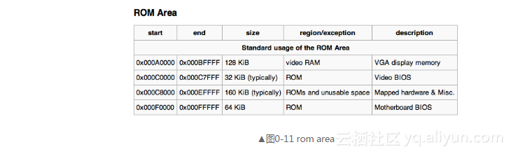
中断向量表中第0H～1FH项是BIOS中断。
另外，上面说的是BIOS在填写中断向量表，那该表是谁创建的呢？答案就是CPU原生支持的，不用谁负责创建。之前我曾说过，软件是靠硬件来运行的，软件能实现什么功能，很大程度上取决于硬件提供了哪些支持。软件中只要执行int 中断向量号，CPU便会把向量号当作下标，去中断向量表中定位中断处理程序并执行。
DOS是运行在实模式下的，故其建立的中断调用也建立在中断向量表中，只不过其中断向量号和BIOS的不能冲突。
0x20～0x27是DOS中断。因为DOS在实模式下运行，故其可以调用BIOS中断。
DOS中断只占用0x21这个中断号，也就是DOS只有这一个中断例程。
DOS中断调用中那么多功能是如何实现的？是通过先往ah寄存器中写好子功能号，再执行int 0x21。这时在中断向量表中第0x21个表项，即物理地址0x21*4处中的中断处理程序开始根据寄存器ah中的值来调用相应的子功能。
而Linux内核是在进入保护模式后才建立中断例程的，不过在保护模式下，中断向量表已经不存在了，取而代之的是中断描述符表（Interrupt Descriptor Table，IDT）。该表与中断向量表的区别会在讲解中断时详细介绍。所以在Linux下执行的中断调用，访问的中断例程是在中断描述符表中，已不在中断向量表里了。
Linux的系统调用和DOS中断调用类似，不过Linux是通过int 0x80指令进入一个中断程序后再根据eax寄存器的值来调用不同的子功能函数的。再补充一句：如果在实模式下执行int指令，会自动去访问中断向量表。如果在保护模式下执行int指令，则会自动访问中断描述符表。
section和segment的区别
C程序大体上分为预处理、编译、汇编和链接4个阶段。
- 预处理阶段是预处理器将高级语言中的宏展开，去掉代码注释，为调试器添加行号等。
- 编译阶段是将预处理后的高级语言进行词法分析、语法分析、语义分析、优化，最后生成汇编代码。
- 汇编阶段是将汇编代码编译成目标文件，也就是转换成了目标机器平台上的机器指令。
- 链接阶段是将目标文件连接成可执行文件。这里我们只关注汇编和链接这两个阶段。
在汇编源码中，通常用语法关键字section或segment来表示一段区域，它们是编译器提供的伪指令，作用是相同的，都是在程序中“逻辑地”规划一段区域，此区域便是节。注意，此时所说的section或segment都是汇编语法中的关键字，它们在语法中都表示“节”，不是段，只是不同编译器的关键字不同而已，关键字segment在语法中也被认为与section意义相同。首先汇编器根据语法规则，会将汇编源码中表示“节”的语法关键字section或segment在目标文件中编译成“节”，此“节”便是我们要讨论的section。经过汇编生成目标文件之后，由这些section或segment修饰的程序区域便成为了“节”（section）。但操作系统加载程序时并不关心节的数量和大小，操作系统只关心节的属性，因为程序必然是要加载到内存中才能运行的，而内存的访问会涉及到全局描述符表中段描述符的访问权限等属性，保护模式下对任何内存的访问都要经过段描述符才行。比如程序代码所在的段描述符权限属性必须是只读，数据所在的段描述符的权限属性必然是可读写，程序中那些只读的节（比如代码区域）必然不能指向可读写的段描述符，同样，程序中的数据也不能用只读权限的段描述符去访问。
操作系统在加载程序时，不需要对逐个节进行加载，只要给出相同权限的节的集合就行了，例如把所有只读可执行的节（如代码节.text和初始化代码节.init）归并到一块，所有可读写的节（如数据节.data和未初始化节.bss）归并到一块，这样操作系统就能为它们分配不同的段选择子，从而指向不同段描述符，实现不同的访问权限了。为了程序能在操作系统上运行，操作系统和编译器需要相互配合，此时汇编器只生成了目标文件，尚未链接，因此这个将“节”合并的工作是由链接器来完成的，链接器将目标文件中属性相同的节合并成一个大的section集合，此集合便称为segment，也就是段，此段便是我们平时所说的可执行程序内存空间中的代码段和数据段。
section称为节，是指在汇编源码中经由关键字section或segment修饰、逻辑划分的指令或数据区域，汇编器会将这两个关键字修饰的区域在目标文件中编译成节，也就是说“节”最初诞生于目标文件中。
segment称为段，是链接器根据目标文件中属性相同的多个section合并后的section集合，这个集合称为segment，也就是段，链接器把目标文件链接成可执行文件，因此段最终诞生于可执行文件中。我们平时所说的可执行程序内存空间中的代码段和数据段就是指的segment。
现在通过实验结果来展示出这两者的不同。其实用一个测试样例就能得出结果，不过为了消除大家的疑虑，测试得更彻底一点，在这里给大家准备了两个小汇编文件，将它们编译链接后，我们通过readelf命令查看其信息来得出结论
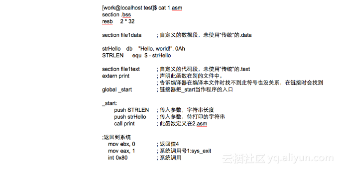
这个汇编文件是在本地中声明了字符串，并调用外部的打印函数print
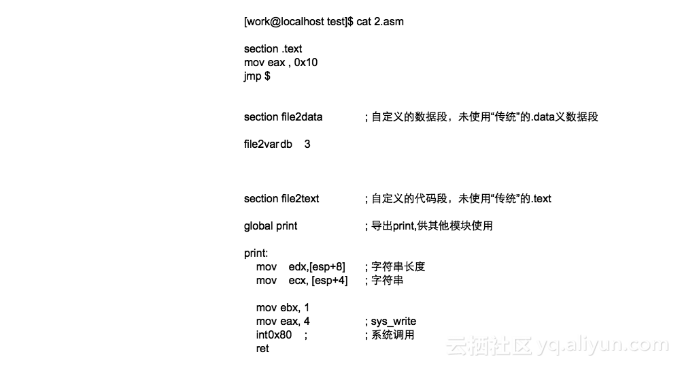
在文件2中声明了函数print。下面将这两个文件分别编译成elf格式，这样方便我们通过readelf来查看其编译结果。开始编译，链接成可执行文件12。
[work@localhost test]$nasm -f elf 1.asm -o 1.o
[work@localhost test]$nasm -f elf 2.asm -o 2.o
[work@localhost test]$ld 1.o 2.o -o 12没问题，再执行一下。
[work@localhost test]$ ./12
Hello，world!打印出了Hello，world!，结果正确。让我们用readelf查看下文件12的头信息，如图0-12所示。
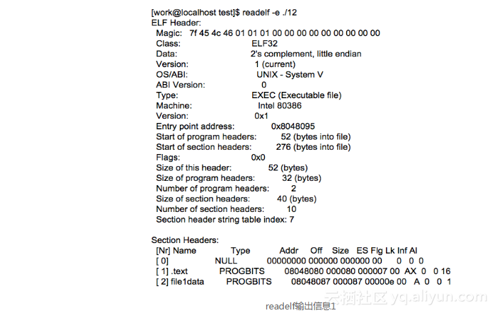
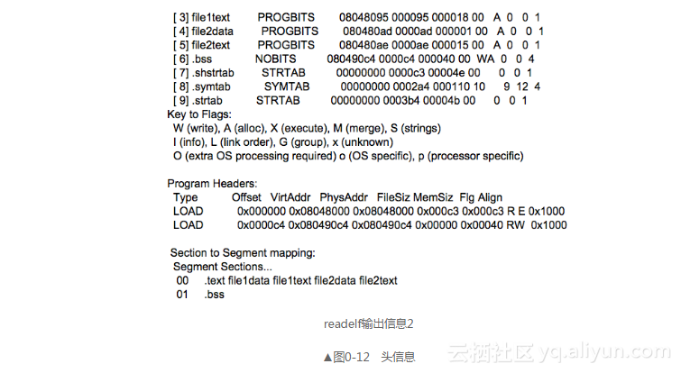
在上面重点部分我都用文字标出了，要注意section headers的部分，此部分显示可执行文件中所有的section，也包括我们在两个汇编文件中用关键字section定义的部分。从第2个section到第5个section，是1.asm中的自定义数据section: file1data，自定义代码section: file1text和2.asm中的自定义数据section: file2data和自定义代码section: file2text。
再往下看Program Headers部分，此处一共有两个段，第一个段是我们的代码段，通过其Flg值为RE便可推断，只读（Readonly）可执行（Execute），其MemSiz为0x000c3。此段对应Section to Segment mapping部分中的第00个Segment，此segment中包括section: .text file1data file1text file2data file2text。
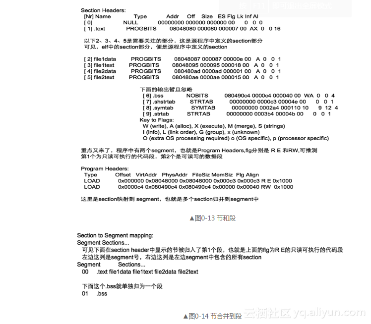
第二个段便是我们的数据段，但此数据段中只包含.bss节（section），它用于存储全局未初始化数据，故其Flg必然可读写，其属性为RW。此段MemSiz大小为0x40，即十进制的64，可见，这和1.asm中定义的bss大小一致，而在2.asm中未定义.bbs section，所以此bss指的就是1.asm中的定义。此段对应Section to Segment mapping部分中的第01 个Segment，而此segment只包括.bss节，独立成一个段了。
自定义的section名，会在elf的section header 中显示出来。下面是几个标准的section（节）名，不是segment（段）名，segment没有名称。
节名 说明
.data 用于存入数据，可读可写
.text 用于存入代码，只读可执行
.bss 全局未初始化区域 在汇编代码中，若以标准节名定义section，如我们定义的.bss便是标准节名。编译器会按照以上说明中的要求使用section内的数据。
不管定义了多少节名，最终要把属性相同的section，或者编译认为可以放到一块的，合并到一个大的segment中，也就是elf中说的 program header 中的项。由此可见，某个节（section）属于某个段（segment），段是由节组成的。另外多说一句，最终给加载器用的也是program header中显示的段，这才是进程的资源，这部分内容将在加载内核时展开。
指令集
指令集就是指令的集合，为一串特定的比特序列命名成一个我们人可以一下子读懂的序列。比如说add。
最早的指令级是CISC，而后才是RISC。他们的区别这里不展开，简单的讲就是从复杂走向简练的过程。
库函数
用户程序不具备独立打印字符的功能，它必须借助操作系统的力量才可以，如何借助呢？操作系统提供了一套系统调用接口，用户进程直接调用这些接口就行啦。简单来说，接口就是某个功能模块的入口，通过接口给该模块一个输入，它就返回一个输出，模块内部实现的过程就像个黑盒子一样，咱们看不到，也无需关心。我们能够打印字符的原因就是调用了系统调用，但是大家确实没有亲手写下调用系统调用的代码（后面章节会说），这就是库函数的功劳，它帮你写下了这些。
但我们并没有看到库函数的实现，我们只是包含了所需要的库函数所在的头文件，该头文件中有这样一句函数的声明。比如printf函数所在的头文件是stdio.h，该文件位于磁盘/usr/include/目录下，其中第361行是对printf的声明。
extern int printf (__const char *__restrict __format,...); 头文件被包含进来后，其内容也是原样被展开到include所在的位置，就是把整个头文件中的内容挪了过来，所以在头文件中的内容是什么都可以，未必一定要是函数声明
如果在头文件中定义的是printf函数的实现，也许就容易理解头文件帮我们做了什么，可是事实不是这样的，头文件中一般仅仅有函数声明，这个声明告诉编译器至少两件事。
（1）函数返回值类型、参数类型及个数，用来确定分配的栈空间。
（2）该函数是外部函数，定义在其他文件，现在无法为其分配地址，需要在链接阶段将该函数体所在的目标文件一同链接时再安排地址。
这第二件事是我们所说的重点。
如果预处理后，主调函数所在的文件中找不到所调用函数的函数体，一定要在链接阶段把该函数体所在的目标文件链接进来，否则程序在道理上都讲不通，怎么能通过编译呢。
您看到了，main.c中我把func_inc.d包含进来，include后面并不是尖括号而是双引号“？”，这用的是自定义文件的包含，并不是包含标准文件（也就是平时我们所说的标准库头文件）。如果用了尖括号，系统就会到默认路径下去搜索该头文件。搜索到头文件后，找到其中被调函数的声明，再到另一默认文件中找该函数体的实现。
另一默认文件，按理来说应该是目标文件。它到底在哪里呢？
gcc编译时加-v参数会将编译、链接两个过程详细地打印出来，如图0-16所示。
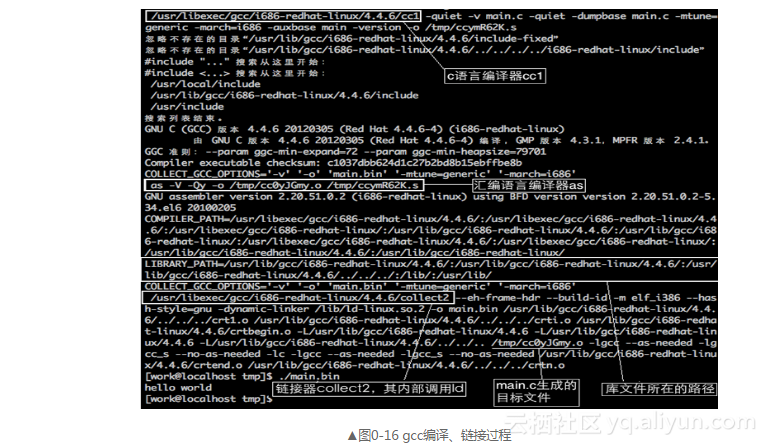
gcc内部也要将C代码经过编译、汇编、链接三个阶段。
（1）编译阶段是将C代码翻译成汇编代码，由最上面的框框中的C语言编译器cc1来完成，它将C代码文件main.c翻译成汇编文件ccymR62K.s。
（2）汇编阶段是将汇编代码编译成目标文件，用第二个框框中的汇编语言编译器as完成，as将汇编文件ccymR62K.s编译成目标文件cc0yJGmy.o。
（3）链接阶段是将所有使用的目标文件链接成可执行文件，这是用左边最下面框框中的链接器collect2来完成的，它只是链接命令ld的封装，最终还是由ld来完成，在这一堆.o文件中，有咱们上面的目标文件cc0yJGmy.o。
以上我们想展开说的是第3点：链接阶段。
大家看到了，实际参与链接的有多个.o文件，这些都是目标文件，也就是函数体所在的文件。printf的函数体就在这里面其中某个.o文件中，而且，printf中也要调用其他函数，这些被调用的函数也分布在这些.o文件之中。
在图-16中的链接阶段，链接器collect2的参数除了有咱们的main.c生成的目标文件cc0yJGmy.o以外，还有以下这几个以crt开头的目标文件：crt1.o，crti.o，crtbegin.o，crtend.o，crtn.o。
crt是什么？CRT，即C Run-Time library，是C运行时库。运行时库是程序在运行时所需要的库，该库是由众多可复用的函数文件组成的，由编译器提供。所以，C运行时库，就是C程序运行时所需要的库文件，在我们的环境中，它由gcc提供。
在程序中简单地一句include <标准头文件>之所以有效，是因为编译器提供的C运行库中已经为我们准备好了这些标准函数的函数体所在的目标文件，在链接时默默帮我们链接上了。这些目标文件都是待重定位文件，重定位文件意思是文件中的函数是没有地址的，用file命令查看它们时会显示relocatable，它们中的地址是在与用户程序的目标文件链接成一个可执行文件时由链接器统一分配的。所以C运行时库中同样的函数与不同的用户程序链接时，其生成的可执行文件中分配给库函数的地址都可能是不同的。每一个用户程序都需要与它们链接合并成一个可执行文件，所以每一个可执行文件中都有这些库文件的副本，这些库文件相当于被复制到每个用户程序中。所以您清楚了，即使咱们的代码只有十几个字符，最终生成的文件也要几KB，就是这个道理。
总结一下：
（1）操作系统有自己支持、加载用户进程的规则，而C运行时库是针对此操作系统的规则，为了让用户程序开发更加容易，用来支持用户进程的代码库。大家要明白，之所以我们写个程序又链接这又链接那的，完全是因为操作系统规定这样做，人在屋檐下，不得不低头。
（2）用户进程要与C运行时库的诸多目标文件链接后合并成一个可执行文件，也就是说我们的用户进程被加进了大量的运行库中的代码。
（3）C运行时库作用如其名，是提供程序运行时所需要的库文件，而且还做了程序运行前的初始化工作，所以即使不包含标准库文件，链接阶段也要用到c运行时库。
（4）用户程序可以不和操作系统打交道，但如果需要操作系统的支持，必须要通过系统调用，它是用户进程和操作系统之间的“钩子”，用户进程顶多算是个半成品，只有通过钩子挂上了操作系统，加了上所需要的操作系统的那部分代码，用户程序才能做完一件事，这才算完整，后面章节会有详解。
（5）尽管系统调用封装在库函数中，但用户程序可以直接调用“系统调用”，不过用库函数会比较高效。
这里补充点内容：
库函数其实就是一个函数定义，比如常见read()、write()等函数说明了如何获得一个给定的服务，但是系统调用是通过软中断向内核发出一个明确的请求，再者系统调用是在内核完成的，而用户态的函数是在函数库完成的。
系统调用发生在内核空间，因此如果在用户空间的一般应用程序中使用系统调用来进行文件操作，会有用户空间到内核空间切换的开销。事实上，即使在用户空间使用库函数来对文件进行操作，因为文件总是存在于存储介质上，因此不管是读写操作，都是对硬件（存储器）的操作，都必然会引起系统调用。也就是说，库函数对文件的操作实际上是通过系统调用来实现的。例如C库函数fwrite()就是通过write()系统调用来实现的。
这样的话，使用库函数也有系统调用的开销，为什么不直接使用系统调用呢？这是因为可以提升效率，减少频繁的状态切换，读写文件通常是大量的数据（这种大量是相对于底层驱动的系统调用所实现的数据操作单位而言），这时，使用库函数就可以大大减少系统调用的次数。这一结果又缘于缓冲区技术。在用户空间和内核空间，对文件操作都使用了缓冲区，例如用fwrite写文件，都是先将内容写到用户空间缓冲区，当用户空间缓冲区满或者写操作结束时，才将用户缓冲区的内容写到内核缓冲区，同样的道理，当内核缓冲区满或写结束时才将内核缓冲区内容写到文件对应的硬件媒介。
系统调用与系统命令：系统命令相对API更高一层，每个系统命令都是一个可执行程序，比如常用的系统命令ls、hostname等，比如strace ls就会发现他们调用了
诸如open(),brk(),fstat(),ioctl()等系统调用。
系统调用是用户进程进入内核的接口层，它本身并非内核函数，但他是由内核函数实现的，进入系统内核后，不同的系统调用会找到各自对应的内核函数，这些内核函数被称为系统调用的“服务例程”。也可以说系统调用是服务例程的封装例程。
（参考博客系统调用、库函数和内核函数关系与区别 - friedCoder - 博客园 (cnblogs.com)）
MBR EBR DBR OBR
这几个概念主要是围绕计算机系统的控制权交接展开的，整个交接过程就是个接力赛，咱们从头梳理。
计算机在接电之后运行的是基本输入输出系统BIOS，BIOS是位于主板上的一个小程序，其所在的空间有限，代码量较少，功能受限，因此它不可能一人扛下所有的任务需求，也就是肯定不能充当操作系统的角色（比如说让BIOS运行QQ是不可能的），必须采取控制权接力的方式，一步步地让处理器执行更为复杂强大的指令，最终把处理器的使用权交给操作系统
采用接力式控制权交接，BIOS只完成一些简单的检测或初始化工作，然后找机会把处理器使用权交出去。交给谁呢？下一个接力棒的选手是MBR，为了方便BIOS找到MBR，MBR必须在固定的位置等待，因此MBR位于整个硬盘最开始的扇区。
MBR是主引导记录，Master或Main Boot Record，它存在于整个硬盘最开始的那个扇区，即0盘0道1扇区，这个扇区便称为MBR引导扇区。注意这里用CHS方式表示MBR引导扇区的地址，因此扇区地址以1开始，顺便说一句，LBA方式是以0为起始为扇区编址的，有关CHS和LBA的内容会在后面章节介绍。一般情况下扇区大小是512字节，但大伙儿不要把这个当真理，有的硬盘扇区并不是512字节。在MBR引导扇区中的内容是：
（1）446字节的引导程序及参数；
（2）64字节的分区表；
（3）2字节结束标记0x55和0xaa。
在MBR引导扇区中存储引导程序，为的是从BIOS手中接过系统的控制权，也就是处理器的使用权。任何一棒的接力都是由上一棒跳到下一棒，也就是上一棒得知道下一棒在哪里才能跳过去，否则权利还是交不出去。BIOS知道MBR在0盘0道1扇区，这是约定好的，因此它会将0盘0道1扇区中的MBR引导程序加载到物理地址0x7c00，然后跳过去执行，这样BIOS就把处理器使用权移交给MBR了。
既然MBR称为“主”引导程序，有“主”就得有“次”， MBR的作用相当于下一棒的引导程序总入口，BIOS把控制权交给MBR就行了，由MBR从众多可能的接力选手中挑出合适的人选并交出系统控制权，这个过程就是由“主引导程序”去找“次引导程序”，这么说的意思是“次引导程序”不止一个。也许您会问，为什么BIOS不直接把控制权交给“次引导程序”？原因是BIOS受限于其主板上的存储空间，代码量有限，本身的工作还做不过来呢，因此心有余而力不足。好啦，下面开始下一轮的系统控制权接力。不要忘了，MBR引导扇区中除了引导程序外，还有64字节大小的分区表，里面是分区信息。分区表中每个分区表项占16字节，因此MBR分区表中可容纳4个分区，这4个分区就是“次引导程序”的候选人群，MBR引导程序开始遍历这4个分区，想找到合适的人选并把系统控制权交给他。
通常情况下这个“次引导程序”就是操作系统提供的加载器，因此MBR引导程序的任务就是把控制权交给操作系统加载器，由该加载器完成操作系统的自举，最终使控制权交付给操作系统内核。但是各分区都有可能存在操作系统，MBR也不知道操作系统在哪里，它甚至不知道分区上的二进制01串是指令，还是普通数据
为了让MBR知道哪里有操作系统，我们在分区时，如果想在某个分区中安装操作系统，就用分区工具将该分区设置为活动分区，设置活动分区的本质就是把分区表中该分区对应的分区表项中的活动标记为0x80。MBR知道“活动分区”意味着该分区中存在操作系统，这也是约定好的。活动分区标记位于分区表项中最开始的1字节，其值要么为0x80，要么为0，其他值都是非法的。0x80表示此分区上有引导程序，0表示没引导程序，该分区不可引导。MBR在分析分区表时通过辨识“活动分区”的标记0x80开始找活动分区，如果找到了，就将CPU使用权交给此分区上的引导程序，此引导程序通常是内核加载器，下面就直接以它为例。
“控制权交接”是处理器从“上一棒选手”跳到“下一棒选手”来完成的，内核加载器的入口地址是这里所说的“下一棒选手”，但是内核加载器在哪里呢？为了MBR方便找到活动分区上的内核加载器，内核加载器的入口地址也必须在固定的位置，这个位置就是各分区最开始的扇区，这也是约定好的。这个“各分区起始的扇区”中存放的是操作系统引导程序——内核加载器，因此该扇区称为操作系统引导扇区，其中的引导程序（内核加载器）称为操作系统引导记录OBR，即OS Boot Record，此扇区也称为OBR引导扇区。在OBR扇区的前3个字节存放了跳转指令，这同样是约定，因此MBR找到活动分区后，就大胆主动跳到活动分区OBR引导扇区的起始处，该起始处的跳转指令马上将处理器带入操作系统引导程序，从此MBR完成了交接工作
不过OBR中开头的跳转指令跳往的目标地址并不固定，这是由所创建的文件系统决定的，对于FAT32文件系统来说，此跳转指令会跳转到本扇区偏移0x5A字节的操作系统引导程序处。不管跳转目标地址是多少，总之那里通常是操作系统的内核加载器。
计算机历史中向来把兼容性放在首位，这才是计算机蒸蒸日上的原因。OBR是从DBR遗留下来的，要想了解OBR，还是先从了解DBR开始。DBR是DOS Boot Record，也就是DOS操作系统的引导记录（程序），DBR中的内容大概是：
（1）跳转指令，使MBR跳转到引导代码；
（2）厂商信息、DOS版本信息；
（3）BIOS参数块BPB，即BIOS Parameter Block；
（4）操作系统引导程序；
（5）结束标记0x55和0xaa。
在DOS时代只有4个分区，不存在扩展分区，这4个分区都相当于主分区，所以各主分区最开始的扇区称为DBR引导扇区。后来有了扩展分区之后，无论分区是主分区，还是逻辑分区，为了兼容，分区最开始的扇区都作为DOS引导扇区。但是其他操作系统如UNIX，Linux等为了兼容MBR也传承了这个习俗，都将各分区最开始的扇区作为自己的引导扇区，在里面存放自己操作系统的引导程序。由于现在这个“分区最开始的扇区”引导的操作系统类型太多了，而且DOS还退出历史舞台了，所以DBR也称为OBR。
这里提到了扩展分区就不得不提到EBR。当初为了解决分区数量限制的问题才有了扩展分区，EBR是扩展分区中为了兼容MBR才提出的概念，主要是兼容MBR中的分区表。分区是用分区表来描述的，MBR中有分区表，扩展分区中的是一个个的逻辑分区，因此扩展分区中也要有分区表，为扩展分区存储分区表的扇区称为EBR，即Expand Boot Record，从名字上看就知道它是为了“兼容”而“扩展”出来的结构，兼容的内容是分区表，因此它与MBR结构相同，只是位置不同，EBR位于各子扩展分区中最开始的扇区（注意，各主分区和各逻辑分区中最开始的扇区是操作系统引导扇区），理论上MBR只有1个，EBR有无数个。有关扩展分区的内容还是要参见后面有关分区的章节，那里介绍得更细致。
现在总结一下。
EBR与MBR结构相同，但位置和数量都不同，整个硬盘只有1个MBR，其位于整个硬盘最开始的扇区——0道0道1扇区。而EBR可有无数个，具体位置取决于扩展分区的分配情况，总之是位于各子扩展分区最开始的扇区，如果此处不明白子扩展分区是什么，到了以后跟踪分区的章节中大伙儿就会明白。OBR其实就是DBR，指的都是操作系统引导程序，位于各分区（主分区或逻辑分区）最开始的扇区，访扇区称为操作系统引导扇区，即OBR引导扇区。OBR的数量与分区数有关，等于主分区数加逻辑分区数之和，友情提示：一个子扩展分区中只包含1 个逻辑分区。
MBR和EBR是分区工具创建维护的，不属于操作系统管理的范围，因此操作系统不可以往里面写东西，注意这里所说的是“不可以”，其实操作系统是有能力读写任何地址的，只是如果这样做的话会破坏“系统控制权接力赛”所使用的数据，下次开机后就无法启动了。OBR是各分区（主分区或逻辑分区）最开始的扇区，因此属于操作系统管理。
DBR、OBR、MBR、EBR都包含引导程序，因此它们都称为引导扇区，只要该扇区中存在可执行的程序，该扇区就是可引导扇区。若该扇区位于整个硬盘最开始的扇区，并且以0x55和0xaa结束，BIOS就认为该扇区中存在MBR，该扇区就是MBR引导扇区。若该扇区位于各分区最开始的扇区，并且以0x55和0xaa结束，MBR就认为该扇区中有操作系统引导程序OBR，该扇区就是OBR引导扇区。
DBR、OBR、MBR、EBR结构中都有引导代码和结束标记0x55和0xaa，因此很多同学都容易把它们搞混。不过它们最大的区别是分区表只在MBR和EBR中存在，DBR或OBR中绝对没有分区表。MBR、EBR、OBR的位置关系如图0-21所示。
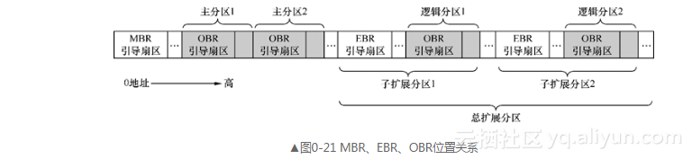
MBR主引导记录
细说电脑开机过程
我们的计算机摁下开机键后，我们运行的第一个软件就是BIOS，全程就是Basic Input Output System，我们现在就有问题
- 谁加载？
- 加载到哪里
- 他的CS:IP谁来改
BIOS
Intel 8086有二十根地址线，可以访问1MB内存大小，也就是说可以访问$2^{20}$B的大小，也就是1MB大小的内存。地址用一个五字节的数描述：0x00000 ~ 0xFFFFF
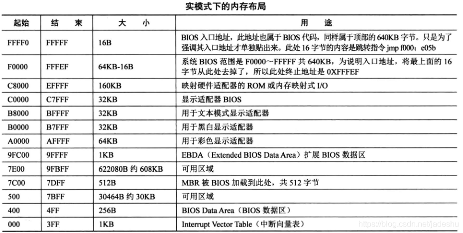
让我们看看：现在从低地往上看，也就是看看从0到0x9FFFF地址处就是DRAM，这个指的是动态的RAM（随机存储器），这里若是我们知道硬件的知识就会知道这说明构成RAM的电容是充放电迅速的，数据易失的。
我们看到F0000到FFFEF这个位置，存放的就是BIOS的代码。这里，BIOS会建立中断向量表（Interrupt Vector Table），我们就是这样建立起"int"中断号来实现相关的硬件调用。当然，这里只是完成最基础的一些工作。
我们知道，为什么BIOS分明在主板上却在实模式上访问不到1MB以外的内存呢？答案是——地址总线的宽度太小，我们的硬件需要经过地址分配映射到地址总线可以访问到的编号大小才可以。所以，在实模式下只好访问1MB了。
BIOS的启动过程
啥？BIOS也启动？事实上，BIOS的代码是厂家已经烧录进ROM（只读存储器）的，这个ROM的内存被映射到了低端1MB的上端（这个映射是实际操作硬件完成的）
BIOS既然是一个程序，就需要执行代码，但是只有16B，只能执行一条：不难猜到就是跳转指令！
[0x0000fffffff0] f000:fff0 (unk. ctxt): jmpf 0xf000:e05b ; ea5be000f0 这就是我在启动BIOS的时候抓取到的代码，可以看到，跳转到的地方，也就是0xfe05b这个地方继续执行。
0x7c00
这里是MBR的地址，但是我们先按顺序继续说。BIOS的最后一项工作就是检查位于0盘0道1扇区的内容。这个扇区有这样的规定
若这块内存的结尾是0x55和0xaa，BIOS将会认为这个扇区存在一个神秘的引导程序，也就是MBR其实。
无论是怎样的介质——软盘，硬盘还是什么，只要看到这两个数，就认为这是MBR。
那么为什么是0x7C00呢？答案是这样的，早期只有16位机和32位机，我们的研发工程师就默认32KB了，会在最后（为什么是最后呢？答案是MBR主要就是引导其他机器码进来（jmp xxx），随后就没用了，可以被覆盖从而实现内存的复用，为了使得MBR保险起见不被过早覆盖，就放到后面了）的地址内存空间。也就是0x8000 - 0x0400 = 0x7C00这就是这个数字的来历：DOS1.0要求最小的空间32KB 减去MBR自己的大小。这下就对了。
实验：尝试写一个简单的mbr.s
;Main Guide Program
;-------------------------------------------------
SECTION MBR vstart=0x7c00
mov ax, cs
mov ds, ax
mov es, ax
mov ss, ax
mov fs, ax
mov sp, 0x7c00 ; 指引调用栈指针指向BIOS加载
;-------------------------------------------------
; INT 0x10 功能号是:0x06，也就是上卷窗口
;-------------------------------------------------
;输入
;AH = 0x06
;AL = 上卷行数（0表示全部上卷）
;BH = 上卷行属性
;(CL, CH) = 窗口左上角的位置
;(DL, DH) = 窗口的右下角位置
; no return
mov ax, 0x600
mov bx, 0x700
mov cx, 0 ;左上角
mov dx, 0x184f ;右下角，VGA文本模式下全屏大小是80个字符呈上25行，下标从0开始，那就是0x 18 4f
int 0x10 ;触发0x10号中断
;---------获取光标位置------------------
;.cursor获取当前位置且在光标处打印字符
mov ah, 3
mov bh, 0
int 0x10
;-------------------------------------
;-----------打印字符串-----------------
mov ax, message
mov bp, ax ; es:bp是串的首地址，es跟cs此时一致
mov cx, 12 ;串的长度
mov ax, 0x1301 ;ah al两个8位寄存器被合并赋值，此时这样赋值时ah -> 0x13, al -> 0x01:显示字符串且光标跟随移动
mov bx, 0x2 ;bh存储的是显示的页号，此时显示的是0， bl则是说明字符属性，这里是黑底绿字
int 0x10 ;
;-------------------------------------
jmp $ ;反复跳转到这一行
message db "Hello,World"
times 510 - ($ - $$) db 0 ;将剩下的字节处全部赋值为0,留下两个字节给魔数提示
db 0x55, 0xaa
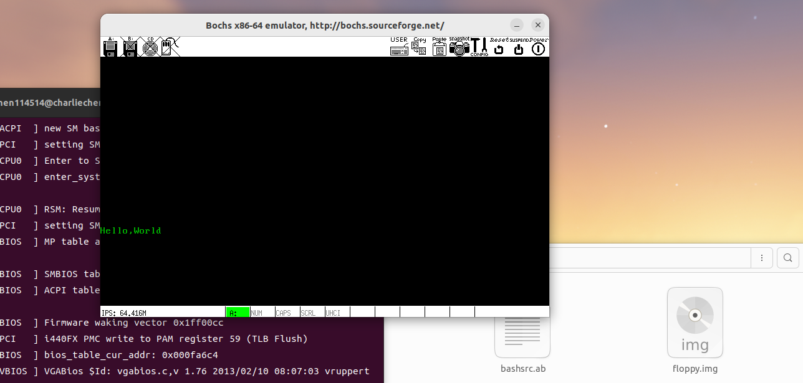
这就是效果。